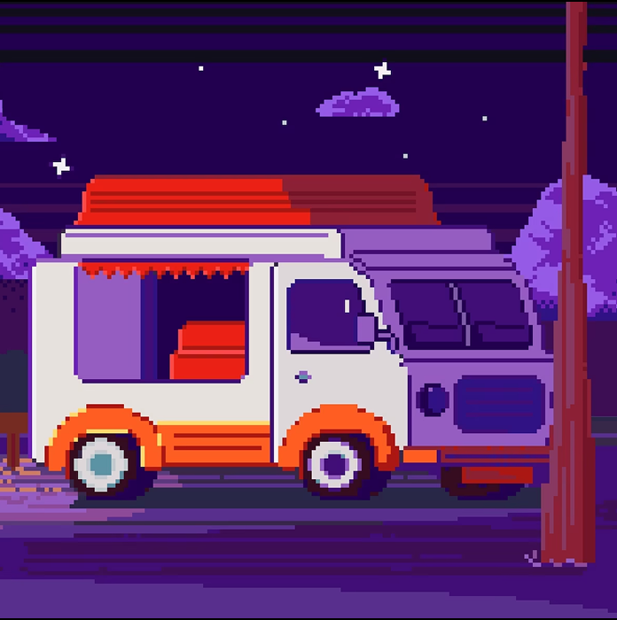

Фритрек и нулевой спринт: Подготовка к работе

Это было самое начало пути. На этом этапе важно было проникнуться основами и настроиться на учёбу. И, возможно, подумать, как новые знания могут повлиять на ваше будущее.
Начиная обучение меня одолевал страх касательно того: буду ли я успевать работать и обучаться? правильно ли я поступила решив сменить профессию? А также во мне горело (и продолжает гореть) стремление освоить новые навыки, а также в будущем устроиться на работу по профессии Фронтетд разработчик. Помимо этого, хочетелось научиться делать красивые и удобные для людей сайты.